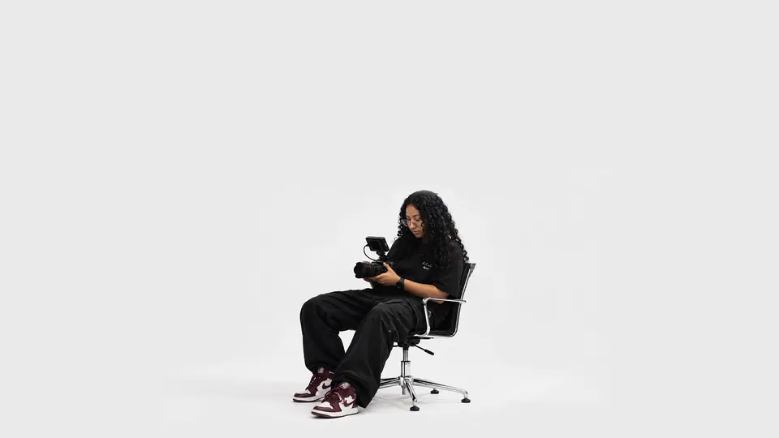
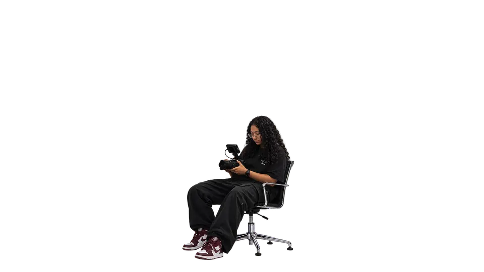

Herramientas
Edición
y fotografía
La imagen primero. Retrato, fotografía conceptual y documental, composición visual y piezas audiovisuales editadas para contar algo concreto.
Fotografía
Edición y video
Desarrollo
No sólo produzco contenido: lo construyo. Webs, interfaces, experiencias interactivas y proyectos multimedia donde el diseño y el código son la misma decisión.
Juegos
Páginas web
Creación
con IA
La IA como herramienta, no como atajo. Dirección visual, conceptualización, generación de recursos y experimentación audiovisual integradas en el proceso de producción.